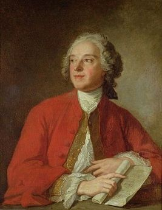

Выдающийся французский драматург, непревзойденный полемист и острослов, автор великих комедий «Севильский цирюльник» и «Безумный день, или Женитьба Фигаро».
Родился Бомарше 24 января 1732 в семье часовщика Андре Шарля Карона в Париже. Сначала он пошел по стопам отца, но одновременно с большим интересом изучал музыку. Музыкальные таланты и великолепный дар оратора открыли молодому Бомарше (тогда еще Карону) доступ в высокое общество. Здесь он приобрел большие связи, пригодившиеся ему впоследствии. Фамилию же «де Бомарше» Карон взял после первого брака. Так называлось поместье, принадлежащее его жене.
Пьер Бомарше «с младых ногтей» делал все возможное, чтобы достичь богатства и высокого положения в обществе. В двадцать один год он создал революционный часовой механизм — анкерный спуск, который обеспечивает равномерный ход часового механизма. А в двадцать два года Бомарше принимают в Лондонское королевское общество (таким образом он становится академиком) и получает место королевского часовщика. При этом занимался обучением музыке принцесс — игре на арфе. Кроме того Бомарше занимался торговлей с Америкой рабами, создав "португальскую компанию" "Родриго Орталес и Ко", стал снабжать оружием восставшие североамериканские колонии, выполнял секретные миссии королей, одно время считался самым богатым человеком Франции, а потом оказался в тюрьме как должник. В тюрьму его сажали и при королевской власти, и после её свержения. Благодаря трём выгодным бракам (все три раза он женился на богатых вдовах), а также сотрудничеству с банкиром Дювернэ, Бомарше стал обладателем весьма значительного состояния.
Своего «Севильского цирюльника» Бомарше сначала сочинил как оперу, и лишь через несколько лет (в 1775 году) состоялась его премьера на сцене «Комеди Франсез», завершившаяся оглушительным провалом. Всего лишь за два дня (!) автор полностью переделал пьесу — и второе представление обернулось её триумфом, сделавшим его самым любимым писателем Франции того времени. Уже через год он написал «Женитьбу Фигаро» — вершину своего творчества, но премьеры пришлось ждать восемь лет. Своему знаменитому герою он дал несуществующее имя Фигаро, под которым скрыл собственное — от Фикаро (сын Каро), как писал в черновиках
«Женитьба Фигаро» выдержала 100 представлений подряд. Бомарше в этой пьесе — провозвестник революции. Наполеон отзывался о ней как о «революции в действии». А до него король Людовик XVI сказал так: «Если быть последовательным, то, допустив постановку этой пьесы, следует разрушить Бастилию. Этот человек смеётся над всем, что следует почитать при известном образе правления...»
Король оказался хорошим предсказателем, а на могиле Бомарше выведены слова: Простой в повседневной жизни, гордый в несчастье, он никогда не поступался своей свободой.
Умер Бомарше 18 мая 1799 года в Париже.
Граф Альмавива, великий коррехидор Андалусии. Преисполнен сознания собственного величия, но это сочетается у него с грацией и непринужденностью. Испорченная его натура не должна оказывать никакого влияния на безукоризненность его манер. Мужчины из высшего общества смотрели на свои любовные похождения, как на забаву, - это было вполне в обычаях того времени. Роль графа особенно трудно играть потому, что он неизменно оказывается в смешном положении, но когда в этой роли выступил превосходный актер (г-н Моле), то она оттенила все прочие роли и обеспечила пьесе успех. В первом и втором действиях граф в охотничьем костюме и высоких сапогах, какие в старину носили в Испании. Начиная с третьего действия и до конца пьесы на нем великолепный испанский костюм.
Графиня Розина, его жена. Волнуемая двумя противоположными чувствами, должна быть осторожна в проявлениях своей чувствительности и крайне сдержанна в своем гневе; главное, в ней не должно быть ничего такого, что наносило бы в глазах зрителя ущерб ее обаянию и ее нравственности. В этой роли, одной из наиболее трудных в пьесе, обнаружилось во всем своем блеске громадное дарование г-жи Сен-Валь младшей. В первом, втором н четвертом действиях на ней удобный пеньюар и никаких украшений на голове: она у себя дома и считается нездоровой. В пятом действии на ней костюм и головной убор Сюзанны.
Фигаро, графский камердинер и домоправитель. Актеру, который будет исполнять эту роль, следует настоятельно порекомендовать возможно лучше проникнуться ее духом, как это сделал г-н Дазенкур. Если бы он усмотрел в Фигаро не ум в соединении с веселостью и острословием, а что-то другое, в особенности если бы он допустил малейший шарж, он бы эту роль провалил, а между тем первый комик театра г-н Превилль находил, что она может прославить любого актера, который сумеет уловить разнообразные ее оттенки и вместе с тем возвыситься до постижения цельности этого образа.
Сюзанна, первая камеристка графини и невеста Фигаро. Ловкая молодая особа, остроумная и жизнерадостная, свободная, однакоже, от почти непристойной веселости развратных наших субреток; милый ее нрав обрисован в предисловии, и тем актрисам, которые не видели г-жи Конта и которые хотели бы как можно лучше изобразить Сюзанну на сцене, надлежит к этому предисловию и обратиться. Костюм ее в первых четырех действиях состоит из очень изящного белого лифа с баской, такой же юбки и головного убора, который наши торговцы с тех пор именуют а ля Сюзанн. В четвертом действии во время празднества граф надевает на нее головной убор с длинной фатой, плюмажем и белыми лентами. В пятом действии на ней пеньюар графини и никаких украшений на голове.
Марселина, ключница. Женщина неглупая, от природы довольно пылкая, однако ошибки молодости и опыт изменили ее характер. Если актриса, которая будет ее играть, сумеет с подобающим достоинством подняться на ту моральную высоту, которой достигает Марселина после сцены узнания в третьем действии, то интерес публики к пьесе от этого только усилится. Одета она, как испанская дуэнья: на ней неяркого цвета платье и черный чепец.
Антонио, садовник, дядя Сюзанны и отец Фаншетты. Должен быть только навеселе, причем хмель у него постепенно проходит, так что в пятом действии он уже совершенно трезв. Одет он, как испанский крестьянин: рукава его одежды откинуты за спину, он в шляпе и в белых туфлях.
Фаншетта, дочь Антонио. Чрезвычайно наивное двенадцатилетнее дитя. Костюм ее состоит из темного лифа с серебряными пуговицами, яркого цвета юбки и черной шапочки с перьями. Так же одеты и все крестьянки на свадьбе.
Керубино, первый паж графа. Роль Керубпно может исполнять только молодая и красивая женщина, как это уже и было. В наших театрах нет очень молодых актеров, настолько сложившихся, чтобы почувствовать тонкости этой роли. В присутствии графини он до крайности несмел, обычно же это прелестный шалун; беспокойное и смутное желание--вот основа его характера. Он стремится к зрелости, но у него нет ни определенных намерений, ни сведений, любое событие способно его захватить; одним словом, он таков, каким всякая мать в глубине души, вероятно, желала бы видеть своего сына, хотя бы это и причинило ей немало страданий. В первом и втором действиях на нем пышный белый, шитый серебром костюм придворного испанского пажа, через плечо перекинут легкий голубой плащ, на голове шляпа с множеством перьев. В четвертом действии на нем лиф, юбка и шапочка, такие же, как на крестьянках, которые его приводят. В пятом действии он в военной форме, в шляпе с кокардой и при шпаге.
Вартоло, севильский врач. Короткополый наглухо застегнутый черный костюм, большой парик, брыжи и отложные манжеты, черный пояс; когда он выходит из дому, то надевает длинный яркокрасный плащ.
Базиль, учитель музыки, дающий уроки графине. Черная шляпа с опущенными полями, сутана без брыжей и манжет, длинный плащ.
Дон Гусман Бридуазон, судья. Должен быть наделен тою простодушною и откровенною самоуверенностью, какою отличаются утратившие робость животные. Его заикание, едва заметное, должно придавать ему особую прелесть, так что актер, который именно в этом увидел бы его смешную сторону, допустил бы грубую ошибку, и получилось бы у него совсем не то, что нужно. Весь комизм Бридуазона заключается в том, что важность его положения не соответствует потешному его характеру, и чем менее актер будет переигрывать, тем более выкажет он истинного дарования. Костюм его составляет мантия испанского судьи, более просторная, нежели мантии наших прокуроров, и скорее напоминающая сутану, а также большой парик и испанские брыжи; в руке у него длинный белый жезл.
Дубльмен, секретарь суда. Одет так же, как судья, но только белый жезл у него короче.
Судебный пристав. Костюм, плащ и шпага Криспена, но висит она у него сбоку и не на кожаном поясе. На ногах у него не сапоги, а черные башмаки, на голове высокий и длинный белый парик с множеством буклей, в руке короткий белый жезл.
Грипсолейль, молодой пастушок. Одежда на нем крестьянская; рукава за спиной, яркого цвета куртка, белая шляпа.
Молодая пастушка. Костюм тот же, что и у Фаншетты.
Педрильо, графский ловчий. Куртка, жилет, пояс, хлыст, дорожные сапоги, на голове сетка, шляпа, как у кучера почтовой кареты.
Действие происходит в замке графа Альмавивы, в котором за один день сплетаются и рвутся интриги, происходят свадьбы и ссоры, открываются неожиданные подробности и случаются самые непредвиденные события. В центре интриги находится молодой домоуправитель графа – Фигаро, весёлый и мудрый юноша, ближайший соратник графа. Впрочем, сейчас он впал в немилость, а всё из-за того, что решил жениться на горничной графини, девушке по имени Сюзанна. Граф решает восстановить отвратительное право сеньора на невинность невесты, но служанка с гневом отказывает ему. Фигаро потрясён подлостью своего господина и обещает Сюзанне обхитрить сластолюбца графа. Девушка уверена, что у него это получится, ведь страсть к интригам и умение вести денежные дела – его стихия